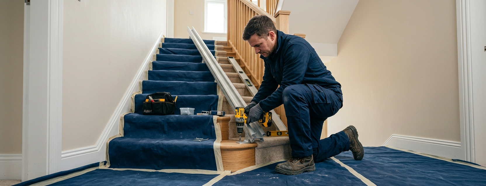

La chronologie type selon votre configuration
Repères indicatifs — à confirmer sur devisJ 0 — demande et rendez-vous
Semaine 1 — visite, mesures, devis
Semaines 2–3 — rail standard disponible, pose en ½ journée
Semaine 1 — visite et relevé laser de l’escalier
Semaines 2–6 — fabrication du rail cintré en usine
Semaines 6–8 — livraison et pose en ½ à 2 journées
Selon le tracé — droit ou sur mesure, comme à l’intérieur
+ éventuels travaux — alimentation extérieure, dalle, reprise de marches
Pose — ½ à 1 journée, météo permettant
Aucun professionnel sérieux ne promet une installation « sous 24 h » sans avoir vu l’escalier : ce délai n’existe que pour quelques modèles droits en stock, dans des zones desservies, et après visite. Méfiez-vous des promesses de délai faites par téléphone.
Le projet étape par étape
- 1
Première demande et prise de rendez-vous · 1 à 5 jours
Description du besoin, du type d’escalier et du secteur ; un rendez-vous de visite est fixé.
- 2
Visite technique et mesures · 1 à 2 h sur place
Examen de l’escalier, choix du modèle et des options avec vous, relevé précis — laser pour un rail sur mesure.
- 3
Devis et délai de réflexion · selon votre rythme
Le devis détaille modèle, options, pose et délai. En cas de démarchage à domicile, un délai légal de rétractation de 14 jours s’applique après signature — l’installation ne démarre en principe pas avant son terme, sauf demande expresse encadrée.
- 4
Commande et fabrication · le poste variable
Rail standard : souvent disponible sous quelques jours. Rail cintré : plusieurs semaines de fabrication en usine, incompressibles. Si un dossier d’aide est en cours, la commande attend l’accord — voir notre guide des aides.
- 5
Préparation éventuelle du logement · en parallèle
Création d’une prise près de l’escalier, retrait d’une rampe ou d’un tapis d’escalier : idéalement réglé avant le jour de pose pour ne pas le décaler.
- 6
Livraison, pose et mise en service · ½ à 2 journées
Fixation du rail, montage du siège, réglages, essais complets, puis démonstration et prise en main avec vous — l’appareil est utilisable le soir même.
Le jour de la pose : à quoi vous attendre
La pose est un chantier léger : pas de gros œuvre, pas de poussière de démolition. Le rail est vissé dans les marches, le siège monté et réglé, les points de charge raccordés. L’escalier reste inutilisable quelques heures seulement. Sur un droit simple, tout est terminé dans la demi-journée ; un tournant complexe sur plusieurs niveaux peut occuper deux journées. La séance se termine toujours par des essais en charge et une démonstration complète : commandes, pivotement du siège, repli, télécommandes, comportement en cas de coupure de courant.
Ce qui allonge (vraiment) les délais
- ·Le rail sur mesure — premier facteur, incompressible : la fabrication ne démarre qu’après le relevé définitif.
- ·L’attente d’un accord d’aide — commander avant l’accord fait perdre l’aide ; intégrez l’instruction du dossier au calendrier.
- ·Les travaux préalables — prise électrique, reprise de marches abîmées, dalle d’accès en extérieur.
- ·La disponibilité locale — planning des équipes de pose selon les secteurs et les périodes (rentrée, hiver).
- ·Les modifications tardives — changer d’option ou de côté d’installation après commande peut relancer une fabrication.
Besoin urgent (retour d’hospitalisation) — dites-le dès le premier contact : sur un escalier droit, certains installateurs mobilisent un appareil de stock ou une location en attendant la solution définitive.
Préparer le logement pour ne rien retarder
- ✓Dégager l’escalier : tapis, objets, plantes sur les marches
- ✓Vérifier qu’une prise existe à proximité — sinon la faire créer avant
- ✓Signaler marches fragiles, fissures ou bois vermoulu dès la visite
- ✓Prévoir l’accès des poseurs (stationnement, codes, ascenseur)
- ✓Être présent pour la démonstration finale — c’est votre formation
Les questions à poser sur le planning
- ·Le délai annoncé court-il à partir de la signature ou de la fin du délai de rétractation ?
- ·Le délai de fabrication du rail est-il écrit sur le devis ?
- ·Que se passe-t-il si la date de pose est dépassée — pénalités, solution d’attente ?
- ·La pose inclut-elle les petits travaux (prise) ou faut-il un autre corps de métier ?
- ·Combien de temps dure la démonstration, et une seconde visite de réglage est-elle prévue ?
Vérifier les délais possibles pour votre projet
Décrivez votre escalier et indiquez votre code postal pour vérifier les solutions et délais envisageables dans votre secteur. Gratuit et sans engagement.
Questions fréquentes sur les délais
Combien de temps dure la pose elle-même ?
Une demi-journée pour la plupart des escaliers droits, jusqu’à deux journées pour un tournant complexe sur plusieurs niveaux. L’appareil est utilisable dès la fin des essais, le jour même.
Peut-on être équipé en 48 heures ?
Seulement dans un cas précis : escalier droit, appareil de stock disponible localement, visite déjà faite. Personne ne peut le promettre sans avoir vu l’escalier — considérez ces annonces comme un signal de prudence.
Pourquoi le rail tournant prend-il plusieurs semaines ?
Il est cintré en usine d’après le relevé laser de votre escalier, courbe par courbe. Cette fabrication unique ne démarre qu’à la commande et ne se raccourcit pas — c’est le cœur du délai des projets tournants.
Le délai de rétractation retarde-t-il l’installation ?
En cas de vente hors établissement (démarchage à domicile), un délai de 14 jours s’applique et l’exécution n’est en principe pas anticipée, sauf demande expresse dans les formes légales. En magasin ou sur devis classique, ce délai ne s’applique pas de la même façon — vérifiez ce que prévoit votre contrat.
Faut-il attendre l’accord des aides avant de commander ?
Oui dans la plupart des dispositifs : commander ou verser un acompte ferme avant l’accord rend la dépense inéligible. Intégrez l’instruction du dossier à votre calendrier — c’est souvent elle, et non la technique, qui fixe la date de pose.
L’escalier est-il utilisable pendant la pose ?
Par intermittence seulement : prévoyez de rester au niveau de vie principal pendant les quelques heures de fixation du rail. Il n’y a ni gravats ni coupure d’eau — c’est un chantier léger.
Un monte-escalier extérieur prend-il plus de temps ?
Le délai dépend d’abord du tracé (droit ou sur mesure), comme à l’intérieur. S’ajoutent parfois des travaux préalables — alimentation extérieure, dalle d’accès — et une contrainte météo pour la pose. Détails dans notre guide du monte-escalier extérieur.
Que faire en attendant l’installation ?
Réorganiser temporairement le rez-de-chaussée (lit, affaires de toilette), sécuriser l’escalier (rampe, éclairage) et, pour les attentes longues sur escalier droit, envisager une location transitoire. Votre installateur peut proposer des solutions d’attente — posez la question.